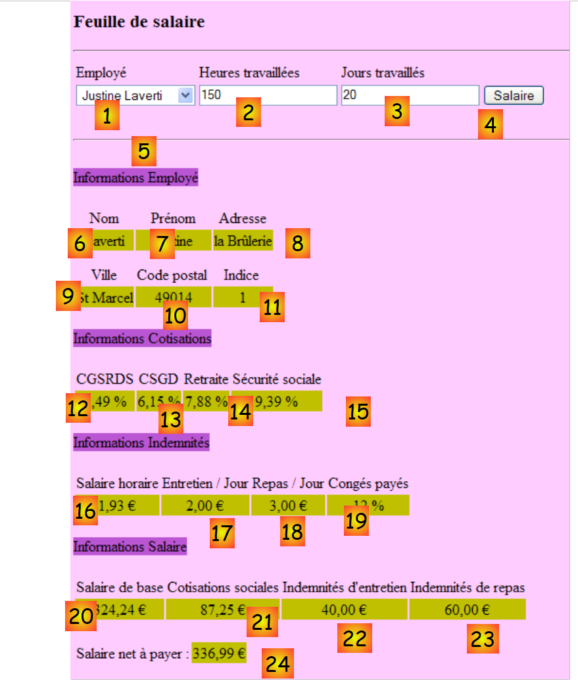
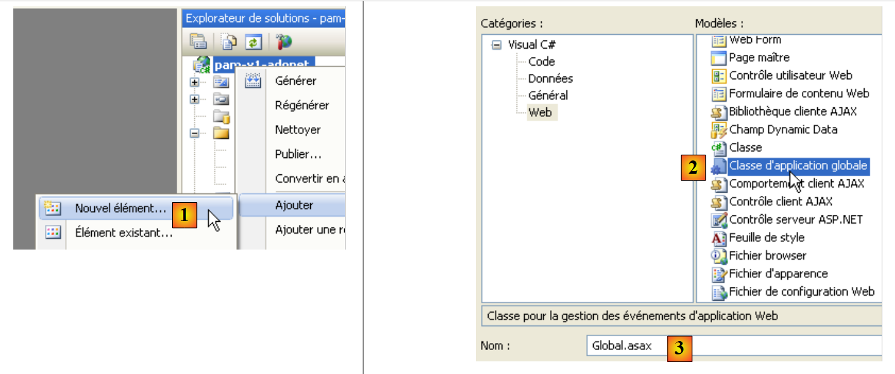

4. L'application [SimuPaie] – version 1 – ASP.NET
4.1. Introduction
Nous souhaitons écrire une application .NET permettant à un utilisateur de faire des simulations de calcul de la paie des assistantes maternelles de l'association " Maison de la petite enfance " d'une commune.
Le formulaire ASP.NET de calcul du salaire aura l'allure suivante :

L'application ASP.NET aura l'architecture suivante :
 |
- lors de la première requête faite à l'application, un objet de type [Global] dérivé du type [System.Web.HttpApplication] est instancié. C'est lui qui va exploiter le fichier de configuration [web.config] de l'application web et mettre en cache certaines données de la base de données (opération 0 ci-dessus).
- lors de la première requête (opération 1) faite à la page [Default.aspx] qui est l'unique page de l'application, l'événement [Load] est traité. On y traite le remplissage du combo des employés. Les données nécessaires au combo sont demandées à l'objet [Global] qui les a mises en cache. C'est l'opération 2 ci-dessus. L'opération 4 envoie la page ainsi initialisée à l'utilisateur.
- lors de la demande du calcul du salaire (opération 1) faite à la page [Default.aspx], l'événement [Load] est de nouveau traité. Rien n'est fait car il s'agit d'une demande de type POST, et le gestionnaire [Pam_Load] a été écrit pour ne rien faire dans ce cas (utilisation du booléen IsPostBack). L'événement [Load] traité, c'est l'événement [Click] sur le bouton [Salaire] qui l'est ensuite. Celui-ci a besoin de données qui n'ont pas été mises en cache dans [Global]. Aussi le gestionnaire de l'événement les demande-t-il à la base de données. C'est l'opération 3 ci-dessus. Le calcul du salaire est ensuite fait et l'opération 4 envoie les résultats à l'utilisateur.
4.2. Le projet Visual Web Developer 2008
 |
- en [1], on crée un nouveau projet
- en [2], de type [Web / Application Web ASP.NET]
- en [3], on donne un nom au projet
- en [4], on précise son nom et en [5] son emplacement. Un dossier [c:\temp\pam-aspnet\pam-v1-adonet] va être créé pour le projet.
 |
- en [5], le projet Visual Web Developer
- en [6], les propriétés du projet (clic droit sur projet / Propriétés / Application).
- en [7], le nom de l'assembly qui sera produit par la génération du projet
- en [8], l'espace de noms par défaut que nous souhaitons avoir pour les classes du projet. La classe [_Default] définie dans les fichiers [Default.aspx.cs] et [Default.aspx.designer.cs] a elle été créée dans l'espace de noms [pam_v1_adonet] dérivé du nom du projet. On peut changer cet espace de noms directement dans le code de ces deux fichiers :
[Default.aspx.cs]
using System;
....
namespace pam_v1
{
public partial class _Default : System.Web.UI.Page
{
[Default.aspx.designer.cs]
//------------------------------------------------------------------------------
// <auto-generated>
// Ce code a été généré par un outil.
// Version du runtime :2.0.50727.3603
//
// Les modifications apportées à ce fichier peuvent provoquer un comportement incorrect et seront perdues si
// le code est régénéré.
// </auto-generated>
//------------------------------------------------------------------------------
namespace pam_v1 {
public partial class _Default {
.........
Le balisage du fichier [Default.aspx] doit être également modifié :
 |
<%@ Page Language="C#" AutoEventWireup="true" CodeBehind="Default.aspx.cs" Inherits="pam_v1._Default" %>
...
L'attribut Inherits ci-dessus désigne la classe définie dans les fichiers [Default.aspx.cs] et [Default.aspx.designer.cs]. On y utilise l'espace de noms pam_v1.
4.2.1. Le formulaire [Default.aspx]
L'aspect visuel du formulaire [Default.aspx] est le suivant :
 |
Les composants sont les suivants :
N° | Type | Nom | Rôle |
DropDownList | ComboBoxEmployes | Contient la liste des noms des employés | |
TextBox | TextBoxHeures | Nombre d'heures travaillées – nombre réel | |
TextBox | TextBoxJours | Nombre de jours travaillés – nombre entier | |
Button | ButtonSalaire | Demande le calcul du salaire | |
TextBox | TextBoxErreur | Message d'information à destination de l'utilisateur ReadOnly=true, TextMode=MultiLine | |
Label | LabelNom | Nom de l'employé sélectionné en (1) | |
Label | LabelPrénom | Prénom de l'employé sélectionné en (1) | |
Label | LabelAdresse | Adresse | |
Label | LabelVille | Ville | |
Label | LabelCP | Code postal | |
Label | LabelIndice | Indice | |
Label | LabelCSGRDS | Taux de cotisation CSGRDS | |
Label | LabelCSGD | Taux de cotisation CSGD | |
Label | LabelRetraite | Taux de cotisation Retraite | |
Label | LabelSS | Taux de cotisation Sécurité Sociale | |
Label | LabelSH | Salaire horaire de base pour l'indice indiqué en (11) | |
Label | LabelEJ | Indemnité journalière d'entretien pour l'indice indiqué en (11) | |
Label | LabelRJ | Indemnité journalière de repas pour l'indice indiqué en (11) | |
Label | LabelCongés | Taux d'indemnités de congés payés à appliquer au salaire de base | |
Label | LabelSB | Montant du salaire de base | |
Label | LabelCS | Montant des cotisations sociales à verser | |
Label | LabelIE | Montant des indemnités d'entretien de l'enfant gardé | |
Label | LabelIR | Montant des indemnités de repas de l'enfant gardé | |
Label | LabelSN | Salaire net à payer à l'employé(e) |
Le formulaire contient en outre deux conteneurs de type [Panel] :
contient le composant (5) TextBoxErreur | |
contient les composants (6) à (24) |
Un composant de type [Panel] peut être rendu visible ou non par programmation grâce à sa propriété booléenne [Panel].Visible.
4.2.2. La vérification des saisies
Pour calculer un salaire, l'utilisateur :
- sélectionne un employé en [1]
- saisit le nombre d'heures travaillées en [2]. Ce nombre peut être décimal, comme 2,5 pour 2 h 30 mn.
- saisit le nombre de jours travaillés en [3]. Ce nombre est entier.
- demande le salaire avec le bouton [4]
 |
Lorsque l'utilisateur entre des données erronées dans [2] et [3], celles-ci sont vérifiées dès que l'utilisateur change de champ de saisie. Ainsi, la copie d'écran ci-dessous a été obtenue avant même que l'utilisateur ne clique sur le bouton [Salaire] :
 |
Il faut deux conditions pour avoir le comportement précédent :
- les composants de validation doivent avoir leur propriété EnableClientScript à vrai :
 |
- le navigateur affichant la page doit être capable d'exécuter le code Javascript embarqué dans une page HTML.
Si le navigateur client ne vérifie pas lui-même la validité des données, celles-ci ne seront vérifiées que lorsque le navigateur postera les saisies du formulaire au serveur. C'est alors le code situé sur ce dernier et qui traite la demande du navigateur qui vérifiera la validité des données. On rappelle que cette vérification doit être toujours faite même si la page affichée dans le navigateur client embarque du code javascript faisant cette même vérification. En effet, le serveur ne peut être assuré que la demande POST qui lui est faite vient réellement de cette page et que donc la vérification des données a été faite.
La liste des validateurs est la suivante :
N° | Type | Nom | Rôle |
RequiredFieldValidator | RequiredFieldValidatorHeures | vérifie que le champ [2] [TextBoxHeures] n'est pas vide | |
RangeValidator | RangeValidatorHeures | vérifie que le champ [2] [TextBoxHeures] est un nombre réel dans l'intervalle [0, 200] | |
RequiredFieldValidator | RequiredFieldValidatorJours | vérifie que le champ [3] [TextBoxJours] n'est pas vide | |
RangeValidator | RangeValidatorJours | vérifie que le champ [3] [TextBoxJours] est un nombre entier dans l'intervalle [0,31] |
Travail à faire : construire la page [Default.aspx]. On placera d'abord les deux conteneurs [PanelErreurs] et [PanelSalaire] pour pouvoir ensuite y placer les composants qu'ils doivent contenir.
4.2.3. Les entités de l'application
 |
Une fois lues, les lignes des tables [cotisations], [employes], [indemnites] seront mises dans des objets de type [Cotisations], [Employe] et [Indemnites] définis comme suit :
namespace Pam.Entites
{
public class Cotisations
{
// propriétés automatiques
public double CsgRds { get; set; }
public double Csgd { get; set; }
public double Secu { get; set; }
public double Retraite { get; set; }
// constructeurs
public Cotisations()
{
}
public Cotisations(double csgRds, double csgd, double secu, double retraite)
{
CsgRds = csgRds;
Csgd = csgd;
Secu = secu;
Retraite = retraite;
}
// ToString
public override string ToString()
{
return string.Format("[{0},{1},{2},{3}]", CsgRds, Csgd, Secu, Retraite);
}
}
}
namespace Pam.Entites
{
public class Employe
{
// propriétés automatiques
public string SS { get; set; }
public string Nom { get; set; }
public string Prenom { get; set; }
public string Adresse { get; set; }
private string Ville { get; set; }
private string CodePostal { get; set; }
private int Indice { get; set; }
// constructeurs
public Employe()
{
}
public Employe(string ss, string nom, string prenom, string adresse, string codePostal, string ville, int indice)
{
SS = ss;
Nom = nom;
Prenom = prenom;
Adresse = adresse;
CodePostal = codePostal;
Ville = ville;
Indice = indice;
}
// ToString
public override string ToString()
{
return string.Format("[{0},{1},{2},{3},{4},{5},{6}]", SS, Nom, Prenom, Adresse, Ville, CodePostal, Indice);
}
}
}
namespace Pam.Entites
{
public class Indemnites
{
// propriétés automatiques
public int Indice { get; set; }
public double BaseHeure { get; set; }
public double EntretienJour { get; set; }
public double RepasJour { get; set; }
public double IndemnitesCP { get; set; }
// constructeurs
public Indemnites()
{
}
public Indemnites(int indice, double baseHeure, double entretienJour, double repasJour, double indemnitesCP)
{
Indice = indice;
BaseHeure = baseHeure;
EntretienJour = entretienJour;
RepasJour = repasJour;
IndemnitesCP = indemnitesCP;
}
// identité
public override string ToString()
{
return string.Format("[{0}, {1}, {2}, {3}, {4}]", Indice, BaseHeure, EntretienJour, RepasJour, IndemnitesCP);
}
}
}
4.2.4. Configuration de l'application
Le fichier [Web.config] qui configure l'application sera le suivant :
<?xml version="1.0" encoding="utf-8"?>
<configuration>
<configSections>
...
</configSections>
<connectionStrings>
<add name="dbpamSqlServer2005" connectionString="Data Source=.\SQLEXPRESS;AttachDbFilename=C:\data\...\dbpam.mdf;User Id=sa;Password=msde;Connect Timeout=30;" providerName="System.Data.SqlClient"/>
</connectionStrings>
<appSettings>
<add key="selectEmploye" value="select NOM,PRENOM,ADRESSE,VILLE,CODEPOSTAL,INDICE from EMPLOYES where SS=@SS"/>
<add key="selectEmployes" value="select PRENOM, NOM, SS from EMPLOYES"/>
<add key="selectCotisations" value="select CSGRDS,CSGD,SECU,RETRAITE from COTISATIONS"/>
<add key="SelectIndemnites" value="select INDICE,BASEHEURE,ENTRETIENJOUR,REPASJOUR,INDEMNITESCP from INDEMNITES"/>
</appSettings>
<system.web>
<!--
Définissez compilation debug="true" pour insérer des symboles
de débogage dans la page compilée. Comme ceci
affecte les performances, définissez cette valeur à true uniquement
lors du développement.
-->
<compilation debug="false">
...
</configuration>
- ligne 9 : définit la chaîne de connexion à la base SQL Server précédente
- lignes 13-16 : définissent des requêtes SQL utilisées par l'application afin d'éviter de les mettre en dur dans le code.
- ligne 13 : la requête SQL est paramétrée. La notation du paramètre est propre à SQL Server.
Travail à faire : introduire ces paramètres dans le fichier [Web.config]. La ligne 9 sera adaptée au chemin réel de la base de données [dbpam.mdf].
4.2.5. Initialisation de l'application
L'initialisation d'une application ASP.NET est faite par le fichier [Global.asax.cs]. Celui-ci est construit de la façon suivante :
 |
- en [1], on ajoute un nouvel élément au projet
- en [2], on ajoute la classe d'application globale qui s'appelle par défaut [Global.asax] [3]
 |
- en [4], le fichier [Global.asax] et la classe associée [Global.asax.cs]
- en [5], on fait afficher le balisage de [Global.asax]
<%@ Application Codebehind="Global.asax.cs" Inherits="pam_v1.Global" Language="C#" %>
La classe [pam_v1.Global] est définie dans le fichier [Global.asax.cs]. Pour notre problème, elle sera définie comme suit :
using System;
using System.Collections.Generic;
using System.Configuration;
using System.Data.SqlClient;
using Pam.Entites;
namespace pam_v1
{
public class Global : System.Web.HttpApplication
{
// --- données statiques de l'application ---
public static Employe[] Employes;
public static Cotisations Cotisations;
public static Dictionary<int, Indemnites> Indemnites = new Dictionary<int, Indemnites>();
public static string Msg = string.Empty;
public static bool Erreur = false;
public static string ConnectionString = null;
// démarrage de l'application
public void Application_Start(object sender, EventArgs e)
{
...
try
{
// connexion
ConnectionString = ...
using (SqlConnection connexion = new SqlConnection(ConnectionString))
{
connexion.Open();
// on récupère la liste des employés qu'on met dans le tableau statique [Employes]
...
// on récupère les taux de cotisation dans la variable statique [Cotisations]
...
// on récupère les indemnités dans le dictionnaire statique [Indemnites]
...
// on a réussi
Msg = "Base chargée...";
}
}
catch (Exception ex)
{
// on note l'erreur
Msg = string.Format("L'erreur suivante s'est produite lors de l'accès à la base de données : {0}", ex);
Erreur = true;
}
}
}
}
- lignes 20: la méthode [Application_Start] est exécutée au démarrage de l'application web. Elle n'est exécutée qu'une fois.
- lignes 12-17 : champs publics et statiques de la classe. Un champ statique est partagé par toutes les instances de la classe. Ainsi, si plusieurs instances de la classe [Global] sont créées, elles partagent toutes le même champ statique [Employes], accessible via la référence [Global.Employes], c.a.d. [NomDeClasse].ChampStatique. [Global] est le nom d'une classe. C'est donc un type de donnée. Ce nom est arbitraire. La classe dérive toujours de [System.Web.HttpApplication].
Revenons à notre classe [Global]. On peut se demander s'il est nécessaire de déclarer statiques ses champs. En fait, il semble que dans certains cas, on puisse avoir plusieurs exemplaires de la classe [Global], ce qui justifie le fait de rendre statiques les champs qui ont à être partagés par toutes ces instances.
Il existe une autre façon de partager des données de portée " application " entre les différentes pages d'une application web. Ainsi le tableau Employes des employés pourrait être mémorisé dans la procédure Application_Start de la façon suivante :
Application.Add("employes",Employes);
[Application] est par défaut dans toute application ASP.NET une référence sur une instance de la classe définie par [Global.asax.cs]. Application est un conteneur pouvant mémoriser des objets de tout type. Le tableau Employes pourrait ensuite être récupéré dans le code d'une page quelconque de l'application web de la façon suivante :
Employe[] employes=Application.Get["employes"] as Employe[];
Parce que le conteneur Application mémorise des objets de tout type, on récupère un type Object qu'il faut ensuite transtyper. Cette méthode est toujours utilisable mais partager des données via des champs statiques typés de l'objet [Global] évite les transtypages et permet au compilateur de faire des vérifications de type qui aident le développeur. C'est la méthode qui sera utilisée ici.
Les données partagées par tous les utilisateurs sont les suivantes :
- ligne 12 : le tableau d'objets de type [Employe] qui mémorisera la liste simplifiée (SS, NOM, PRENOM) de tous les employés
- ligne 13 : l'objet de type [Cotisations] qui mémorisera les taux de cotisations
- ligne 14 : le dictionnaire qui mémorisera les indemnités liés aux différents indices des employés. Il sera indexé par l'indice de l'employé et ses valeurs seront de type [Indemnites]
- ligne 15 : un message indiquant comment s'est terminée l'initialisation (bien ou avec erreur)
- ligne 16 : un booléen indiquant si l'initialisation s'est terminée par une erreur ou non.
- ligne 17 : la chaîne de connexion à la base de données.
Question : compléter le code de la classe [Application_Start].
4.3. Les événements du formulaire [Default.aspx]
4.3.1. La procédure [Page_Load]
Lorsque le formulaire [Default.aspx] est chargé, il va chercher dans le tableau [Global.Employes] (ligne 12) les noms des employés pour les mettre dans la liste déroulante [1] :
 |
- la liste déroulante [1] a été remplie
- le TextBox [5] indique que la base des données a été lue correctement
S'il s'est produit des erreurs d'initialisation lors du démarrage de l'application, le TextBox [5] l'indique :

Question : écrire la procédure [Page_Load] de la page web [Default.aspx] qui, exécutée au démarrage de l'application, garantit le fonctionnement précédent.
4.3.2. Le calcul du salaire
Le clic sur le bouton [4] provoque l'exécution du gestionnaire :
protected void ButtonSalaire_Click(object sender, System.EventArgs e)
Ce gestionnaire commence par vérifier la validité des saisies faites en [2] et [3]. Si l'une des deux est incorrecte, l'erreur est signalée comme il a été montré précédemment. Une fois les saisies [2] et [3] vérifiées et trouvées valides, l'application doit afficher des données complémentaires sur l'utilisateur sélectionné en [1] ainsi que son salaire (cf copie d'écran paragraphe 4.1).
Question : écrire le code de la procédure [ButtonSalaire_Click].